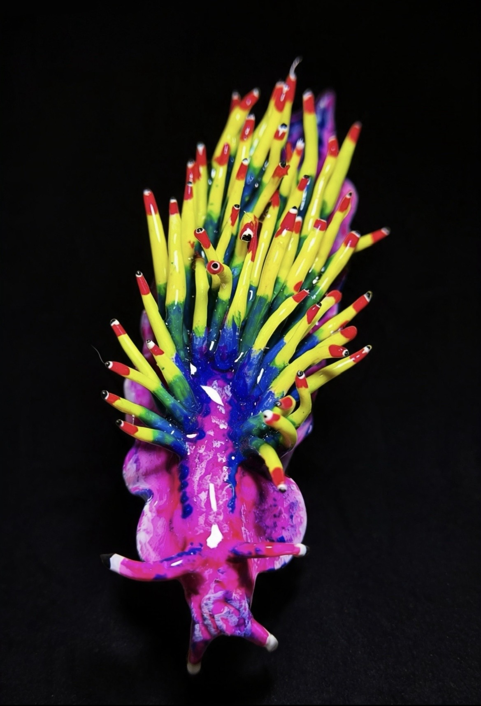
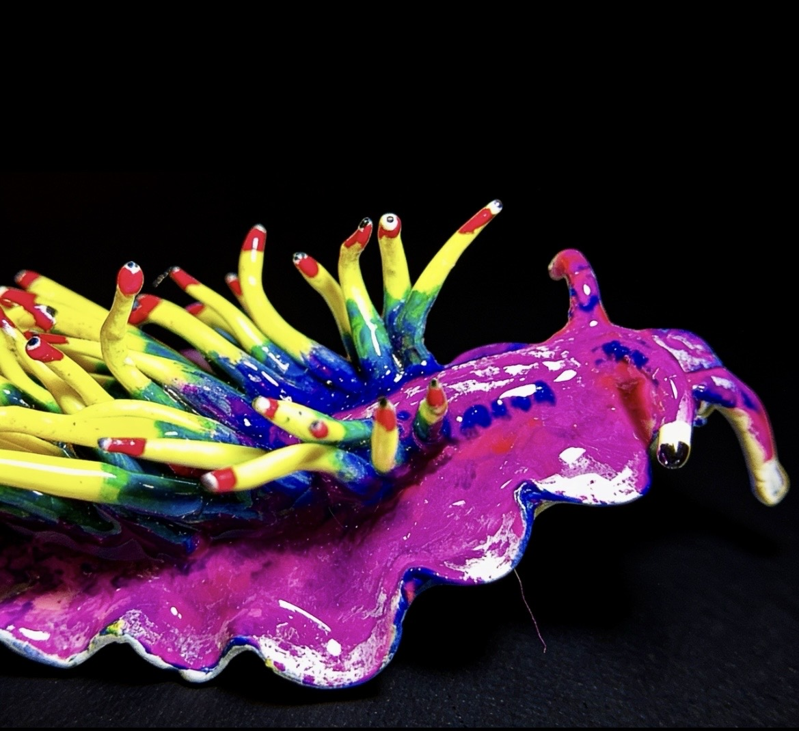
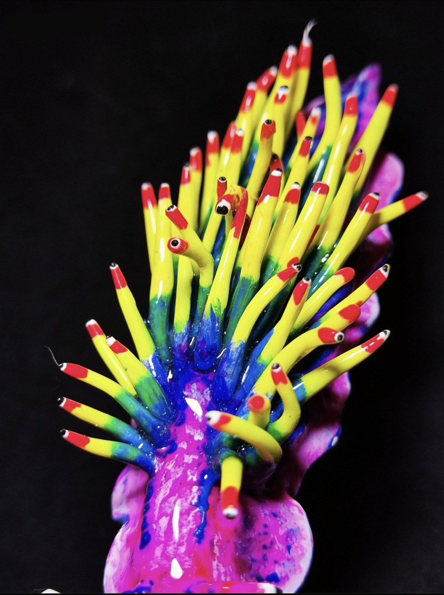
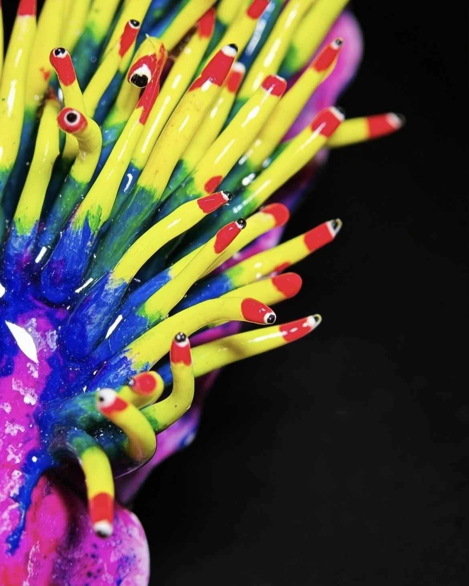
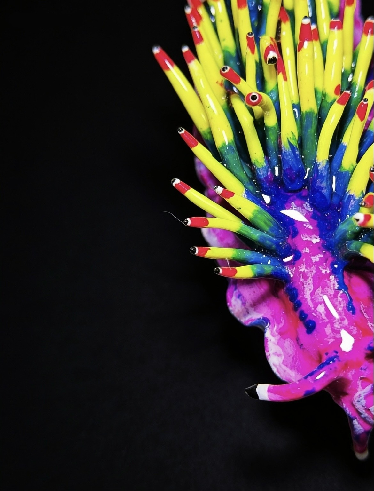
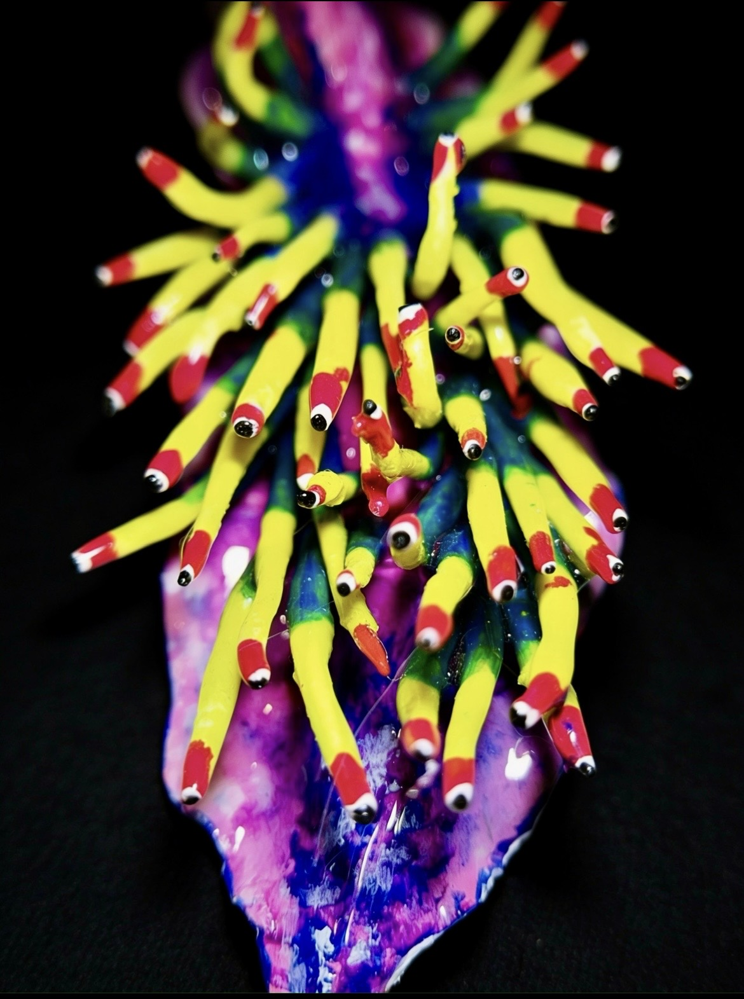

✳
BIOLOGICAL
HALLUCINATIONS
A collection of curious little organisms
born somewhere between biological fascination
and the imaginary.
UNSTABLE CLASSIFICATION
UNKNOWN ORIGIN
ARCHIVE 001—∞
UNKNOWN ORIGIN
ARCHIVE 001—∞
SPECIMEN 001
STATUS: EXISTS
ORIGIN: UNKNOWN
ORIGIN: UNKNOWN







STILL
ALIVE?
ALIVE?
An unidentified
little creature.
little creature.
SPECIES: UNDETERMINED
CLASSIFICATION: BIOLOGICAL HALLUCINATION
STATUS: EXISTS
Seven recorded observations of a small organism whose existence remains suspiciously unquestionable.
CLASSIFICATION: BIOLOGICAL HALLUCINATION
STATUS: EXISTS
Seven recorded observations of a small organism whose existence remains suspiciously unquestionable.